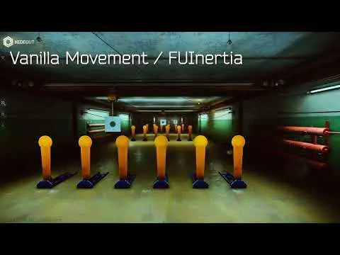
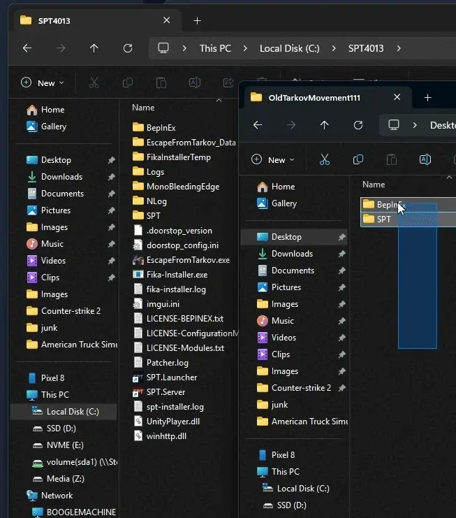

Mod
Featured
Old Tarkov Movement (No Inertia)
- Downloads
- 123,079
- Favourites
- 87
- Mod lists
- 172
Old Tarkov Movement
Info
This mod restores the movement from Tarkov in 2021. It completely removes the modern movement that has inertia, and other hidden values that made the game way slower.

Installation
It will only ask you to replace if you are reinstalling the mod.

Version
1.1.2
SPT ~4.0.0
Fika: compatible
19,176 downloads59.7 KB
Identical to the previous version
Purely to update the server GUID to com.boogle.oldtarkovmovement
VirusTotal: report 1
Version
1.1.1
SPT ~4.0.0
Fika: compatible
29,218 downloads59.8 KB
Just updated the mod to 4.0.0, removed nostalgia mode.
If you run into any problems, suggestions, complaints whatsoever, just reach out to me on Discord: @LeBoogle
VirusTotal: report 1
Version
1.1.0
SPT ~3.11.0
Fika: compatible
29,911 downloadsUnknown size
- Added: NoInertia config option, setting to false will enable inertia. This allows for setups with things like quick leaning but still regular inertia, if you want to do that I guess.
- Fixed: Bushes will no longer slow you down.
VirusTotal: report 1
Version
1.0.8
SPT ~3.11.0
Fika: unknown
4,398 downloadsUnknown size
SPT 3.11 ONLY
Updated to SPT 3.11
VirusTotal: report 1